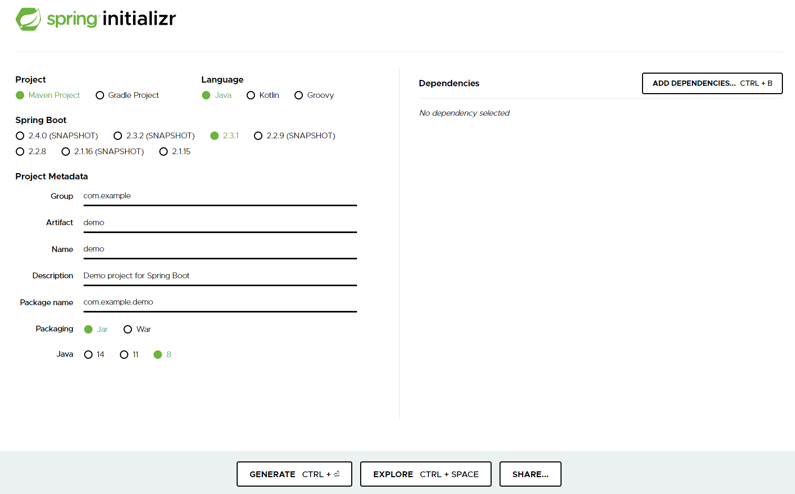
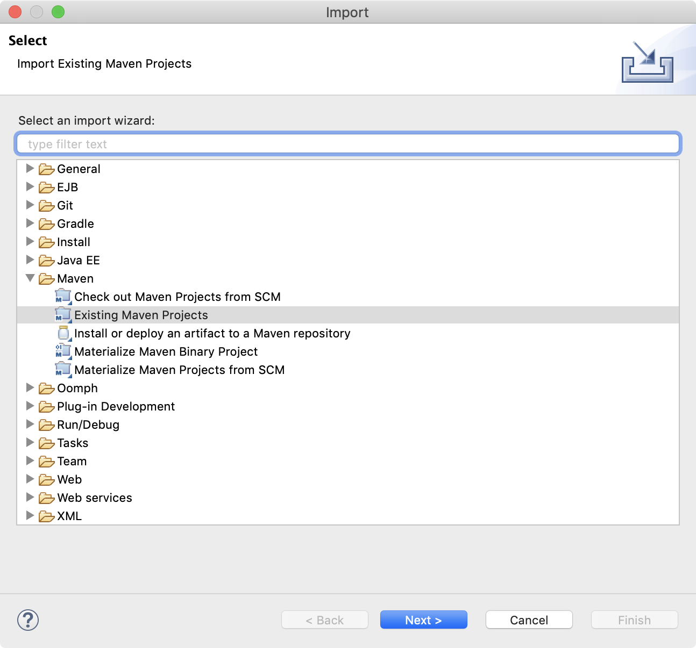
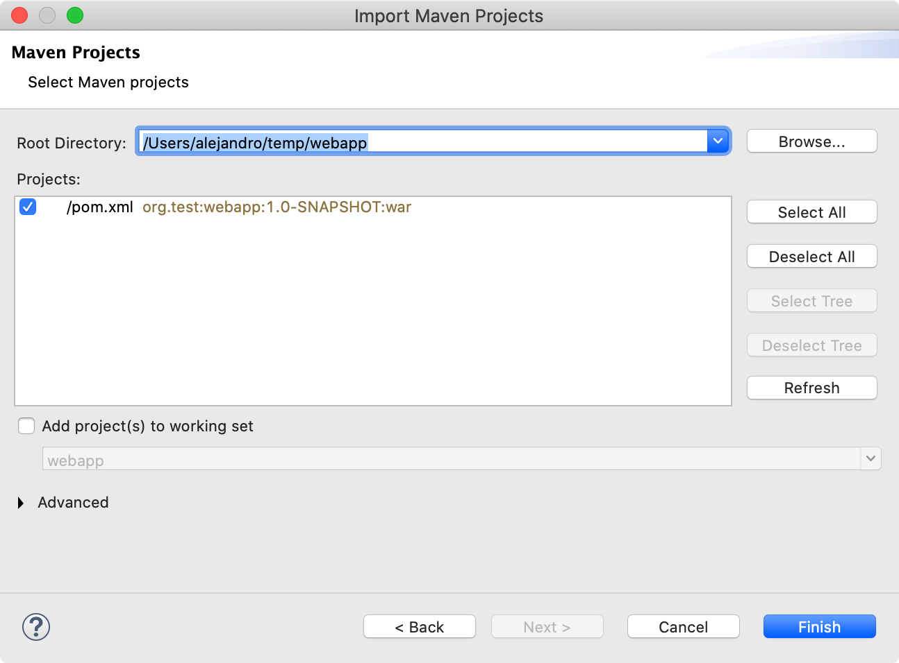

Az alkalmazás célja, hogy a cég munkatársainak különöbző adatait tárolja.

Válasszuk az alábbi beállításokat egy új projekt létrehozásához:
Project: Maven project
Spring Boot: 2.3.3
Language: Java
Project Metadata:
Ezek után lehetőség van még további függőségeket hozzáadni, a legszükségesebbek:
Ezeket az oldal jobb felső részén található gomb megnyomásával feltűnő dialógus ablak segítségével adhatjuk hozzá. A megjelenő dialógus ablak tetején van egy keresőmező, ebben kezdjük el írni a fent említett függőségek nevét, így szűkíthetjük a listát. Ha megtaláltuk az egyes függőségeket, akkor a nevükre kattintva hozzáadódnak a projektünkhöz, és a dialógusablak bezárul.
Ha mindent beállítottunk, akkor az oldal alján található 'GENERATE' gombra kattintva elindul egy zip fájl letöltése.
Fontos, hogy először csomagoljuk ki a letöltött zip fájlt a C:/tanfolyam mappába.
Nyissuk meg az Eclipse IDE-t.
Nyissuk meg a File -> Import menüpontot
Válasszuk a Maven mappából az Existing Maven Projects lehetőséget, majd Next gombra kattintással lépjünk tovább.

Itt a Browse gosmb segítségével keressük meg a korábban kicsomagolt mappát. Ha sikerült megtalálni, akkor így fog kinézni a felület:

Kattintsunk a Finish gombra.
Várjuk meg, amíg az Eclipse letölti a szükséges csomagokat, és elvégzi az indexelést.
Ha az Eclipse befejezte működését, akkor a bal oldali Project Explorer tabon megjelenik a listában a projekt neve. Ha lenyitjuk az egyes mappákat, akkor hasonlóan kell kinéznie a fastruktúrának:
Befejezés után egy ehhez hasonló struktúrájú mappaszerkezetet generált nekünk a fejlesztőeszköz:
+---src| +---main| | +---java| | | \---com| | | \---example| | \---resources| | +---static| | \---templates| \---test| \---java| \---com| \---example\---target+---{további mappák}pom.xml
A gyökér alatt 2 fő könyvtár található: a src és a target. A src a program forráskódjának helye. Az első lépésben megadott csomagnév alapján elkészítette nekünk a mappaszerkezetet és egy main metódust tartalmazó Java osztályt. A target mappába a lefordított osztályok fognak kerülni. Ha nem lenne ilyen könyvtárunk, akkor sincs probléma, első fordításkor létre fogja hozni.
A projektünk gyökérben található egy érdekes fájl pom.xml néven. Ennek az XML-nek a tulajdonságait állítottuk be a projekt létrehozásakor, itt találhatók a hozzáadott könyvtárak a tag alatt. Ha fejlesztés közben új függőségre van szükség, akkor azt ide kell felvenni.
Van egy fájl a src/main/resources mappában application.properties néven (ha valmiért nincs, hozd létre). Ebben kell megadni a kapcsolat felállításához szükséges adatokat.
(Ha nem az alapértelmezett 3306-os porton fut az adatbázis, akkor természetesen ki kell cserélni)
Az alábbi sorok szükségesek az összekapcsoláshoz, azzal a kitétellel, hogy:
xspring.jpa.hibernate.ddl-auto=updatespring.datasource.url=jdbc:mysql://localhost:3306/hrspring.datasource.username={ felhasználónév }spring.datasource.password={ jelszó }
Kezdjük a POJO létrehozásával. Ez az osztály fogja tárolni a munkatárs adatait.
Hozzunk létre egy új csomagot, domain néven.
(Eclipse-ben a com.example csomagon jobb klikk -> New -> Package, majd adjuk meg a nevét.) Ha létrejött az új csomag, akkor látni fogjuk a listában, com.example.hr.domain néven.
Itt hozzuk létre az új osztályunkat, Employee néven.
(Jobb klikk az új package nevén, New -> Class, majd adjuk meg a nevét.)
Az újonnan létejött fájlt nyissuk meg és az alábbi tartalommal töltsük fel. Ami itt ügyelni kell:
x
package com.example.hr.domain;import javax.persistence.GenerationType;import javax.persistence.Column;import javax.persistence.Entity;import javax.persistence.GeneratedValue;import javax.persistence.Id;import javax.persistence.Table; (name="EMPLOYEE") // az adatbázisban a tábla nevepublic class Employee { (strategy = GenerationType.IDENTITY) private Long id; (nullable=false, length=50) private String firstName; (nullable=false, length=100) private String lastName; (nullable=false, length=200) private String email; }A repository rétegben vannak az adatelérésért felelős osztályok. Használjuk a Spring Data JPA csomag által biztosított Repository interface-t annak is egy leszármazottját, a JpaRepostory-t.
Ehhez hozzunk létre először egy új csomagot repository néven a (com.example alatt, tehát com.example.hr.repository legyen az eredmény), majd hozzunk benne létre egy új osztályt EmployeeRepository néven.
A létrejött fájl tartalmát cserélük le az alábbira, figyelve arra, hogy esetleg az első sorban található package deklaráció is helyes legyen!
xxxxxxxxxxpackage com.example.hr.repository;import org.springframework.data.jpa.repository.JpaRepository;import org.springframework.stereotype.Repository; import com.example.hr.domain.Employee; public interface EmployeeRepository extends JpaRepository<Employee, Long> { // első paraméter mindig az entity, második a @Id-val ellátott property típusa. // üres az interfészünk, mert mindent csak öröklünk }A generált projektben a src/main/java mappában egyetlen forrásfájl található, a main metódust tartalmazó osztály. Ez egy @SpringBootApplication annotációval ellátott osztály. Ez automatikusan elvégzi a szükséges konfigurációkat, hogy nekünk csak használni kelljen. aminek a main metódusában van egy SpringBootApplication.run hívás.
Nézzük meg, hogy ehhez hasonló kód szerepel-e a fájlban:
xxxxxxxxxxpublic class Application { public static void main(String[] args) { SpringApplication.run(Application.class, args); }}A projekt nevén történő jobb kattintásra tudjuk választhatjuk a Run as majd a Spring Boot App menüpontot.
(Ha nincs ilyen lehetőség, akkor nincs megfelelően feltelepítve a megfelelő Spring plugin, így ebben az esetben a 'Run As' menüből a 'Maven build...' lehetőséget válasszuk, majd a 'Goals' mezőbe írjuk be: 'spring-boot:run'. Ezek után kattintsunk az Apply & Run gombra.)
Bármelyik módon történő indítás után az Eclipse lefordítja a kódunkat, majd fordítás után a futó alkalmazás elindít egy beágyazott (embedded) Tomcat webszervert, és sikeres futás esetén alapértelmezetten a localhost 8080-es portján fut az alkalmazásunk.
Nyissuk meg a böngészőben a localhost:8080 címet. Láthatjuk, hogy hibát jelenít meg a rendszer, mert még nincs kezdőoldala.
Nyissuk meg az adatbázisunkat. Kell, hogy létrejöjjön egy tábla, EMPLOYEE néven. Töltsük fel ezt a táblát legalább 10 alkalmazott adatával.
Folytassuk a szolgáltatás réteggel. Ehhez hozzunk létre először egy új csomagot service néven a (com.example.hr alatt, tehát com.example.hr.service legyen az eredmény), majd hozzunk benne létre egy új szolgáltatást (azaz osztályt) EmployeeService néven. Ebben lesz benne az a metódus (getEmployees), ami majd visszaadja nekünk a munkatársaink statikus listáját.
x
package com.example.hr.service;import org.springframework.stereotype.Service;import java.util.List;import java.util.ArrayList;import com.example.hr.domain.Employee;import com.example.hr.repository.EmployeeRepository;public class EmployeeService { private final EmployeeRepository employeeRepository; public EmployeeService(EmployeeRepository employeeRepository) { this.employeeRepository = employeeRepository; } // ez az a metódus, ami visszaadja az adatbázisban lévő összes adatot - az employee táblából public List<Employee> getEmployees(){ return employeeRepository.findAll(); } }Ha még fut az alkalmazásunk, akkor láthatjuk, hogy fut, de nincs rajta értelmes adat *csak egy hibaoldal jelenik meg). Van viszont a src/main/resources alatt egy templates mappa, amiben hozzunk létre egy index.html fájlt, az alábbi tartalommal.
xxxxxxxxxx<html> <head> <title>Home</title> </head> <body> <h1>Hali világ! :)</h1> <p>Igen, ez egy végtelenül menő kezdőoldal!</p> </body></html>(Eclipseben a html oldalak szerkesztése, az alapértelmezetten hozzárendelt Web Browser miatt nehézkes. Szerkeszteni úgy tudjuk, hogy a fájl nevén jobb egér gombbal kattintva az Open with opciót választjuk, majd abban a Text Editort.)
Lehet még különböző hibaoldalakat is definiálni: error.html, 404.html.
Miután ezt megtettük, mentsünk el minden fájlt (Ctrl + Shift + S), majd indítsuk újra el az alkalmazást és nézzük meg újra a böngészőnket, a localhost:8080 címen.
Mi azonban dinamikus (azaz szerver által visszaadott) tartalmat szeretnénk megjeleníteni az oldalainkon. Ehhez hozzunk létre egy vezérlő (@Controller) osztályt. A vezérlő osztály egyes metódusai fognak reagálni a felhasználó gépe által küldött kérésekre. A metódusok visszatérési értéke a megjelenített nézet (View), HTML fájlt.
Folytassuk tehát a Java oldali rész utolsó lépésével, jön a vezérlés. Ehhez megint hozzunk létre egy új csomagot com.example.hr.controller néven, majd benne egy új osztályt EmployeeController néven. Ebben egy olyan metódust fogunk felvenni, ami a /employees végpontunkra köti a munkatársak listáját megjelenítő oldalt, de azt majd csak a következő lépésben hozzuk létre.
x
package com.example.hr.controller;import org.springframework.stereotype.Controller;import java.util.List;import java.util.ArrayList;import com.example.hr.domain.Employee;import com.example.hr.service.EmployeeService;import org.springframework.web.bind.annotation.GetMapping;import org.springframework.ui.Model;public class EmployeeController { private final EmployeeService employeeService; public EmployeeController(EmployeeService employeeService) { this.employeeService = employeeService; } ("/employees") public String getEmployees(Model model) { model.addAttribute("employees", employeeService.getEmployees()); return "employees"; }}Tehát kezdőképként a /-re az index.html-t fogja megjelníteni, a /employees-ra pedig a employees.html oldalt (mindkettő a templates mappában lesz megtalálható).
A src/main/resources/templates mappában hozzunk létre egy új fájlt, az index.html oldalunk mellé, employees.html néven.
Ha más mezői vannak a domain osztályunknak, akkor írjuk át a táblázat megfelelő részeit, hogy a jó adatok kerüljenek kiírásra a felületen!
xxxxxxxxxx<html> <head> <title>Munkatársak</title> </head> <body> <table> <thead> <tr> <th>Azonosító</th> <th>Vezetéknév</th> <th>Utónév</th> <th>E-mail cím</th> </tr> </thead> <tbody> <tr th:if="${employees.empty}"> <td colspan="4">Egy munkatárs sincs a rendszerben</td> </tr> <tr th:each="employee : ${employees}"> <td><span th:text="${employee.id}"></span></td> <td><span th:text="${employee.firstName}"></span></td> <td><span th:text="${employee.lastName}"></span></td> <td><span th:text="${employee.email}"></span></td> </tr> </tbody> </table> </body></html>Végül állítsuk le a futó alkalmazást, és indítsuk újra, majd nyissuk meg a böngészőt, localhost:8080/employees néven. Az alkalmazás megjeleníti a listánkat! :)